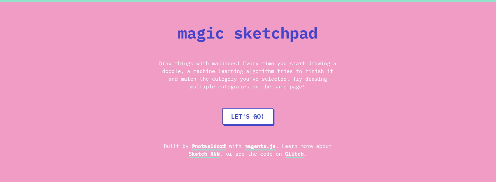
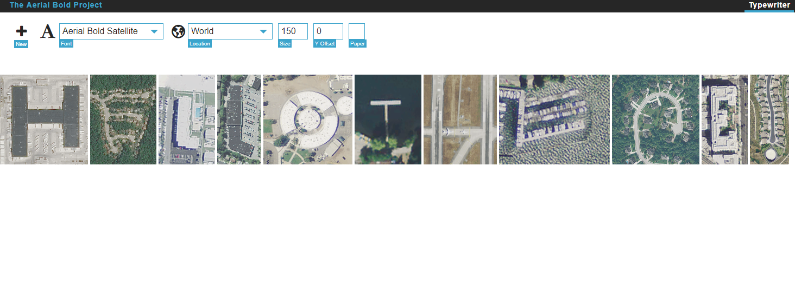

findings - week of 30.6.2019
I've been pretty consistently finding things I want to talk about online recently — but most of my energy has been going toward building my code portfolio on github. I've been learning cryptography through writing hashing algorithms, building a webrtc react application, practicing my ruby and php, and writing a rhythm game — among other things.
this week (or weeks, I guess) I decided to try out the tool I made for automating content discovery a little bit. the tool in question only searches the information organization tool are.na, but the amount of content is so vast that even randomly retrieving links gets good results. I fired up randomarena (my extremely creative name for the tool) and found a couple of things that I wanted to learn more about. hope you enjoy this weeks hodgepodge:
number one: elliott's blur.
this is a tool for creating blurry photos. does what it says on the tin. it's got rave reviews:
'Yes. A pleasant surprise.'
these are some of the images created with the app:
I've been doing a lot of experimentation with digital collage techniques as part of my recent design works (which I hope to post about soon), and...well, sometimes you just need a nice blurry picture. or even an entire blurry website.
number two: magic sketchpad.
magic sketchpad is a machine learning art project created using magenta.js, a javascript api that translates the functionality of the magenta python library to a browser environment. it's fun to play with!
this is a magic sketchpad-assisted drawing of 'everything'. machine-learning algorithms creating art — no matter the style — always seem to create pieces reminiscent of that "name a single thing in this photo" tweet.
number three: aerial bold typewriter.
the aerial bold (get it?) typewriter is a site where you can type out some words, and then each letter is replaced by an aerial landscape image that sort of looks like the letter it replaced. it also plays funky sounds when you're typing.
this project is pretty gigantic and required years of work from many, many people. I can't really explain all the things that went into it, but it is really cool. take a look!
number four: tone.js.
tone.js is a javascript framework for creating interactive music. it uses javascript's native web audio api to create a slew of impressive features such as synthesizers and various audio effects.
the main reason I've been researching web audio-related stuff is because of the rhythm game I'm currently working on, so this is really interesting to me! if you're also interested in the possibilities of a web-based music creation framework, check this out and check out some of the demos here. the possibilities are pretty massive.
number five: pepsi logo redesign.
this isn't new to me per se, but I was just reminded of it while I
was listening to
lemon demon's
redesign your logo. it showcases just how much thought can go into graphic design,
especially when designers are working for globally recognizable
brands that have to appeal to hundreds of millions of people. it
might read like the lesser key of solomon, but the techniques,
methods, and relationships described in the document are legitimate
concerns when design is done at such a scale. also, a recent design
document for coca cola is just as complex — if less esoteric
— and is one hundred and forty-six pages long.
side note: some of the links that I stumbled
upon were previously collected and posted by
elliott cost,
and there's a lot of interesting stuff on their site that I didn't
write about but found to be super cool, so check it out if you want
to.
I'm moving really soon and hopefully transitioning into a new job. a lot of stuff is changing really quickly in my life right now, and I'm trying to keep up.
although I'll be extremely busy, I hope I can put out another post
later this week! I'm working on a couple of cool projects that I
want to write about pretty soon. so, to the person reading this,
thank you so much, and I hope something I found was interesting or
useful to you. see you later!
currently listening to:
-
Baby Click!
by t+pazolite
-
Butterfly Effect
by
fox capture plan
-
夏の雨の日の思い出
by Kikuo
-
責任とってよね
by agoaniki